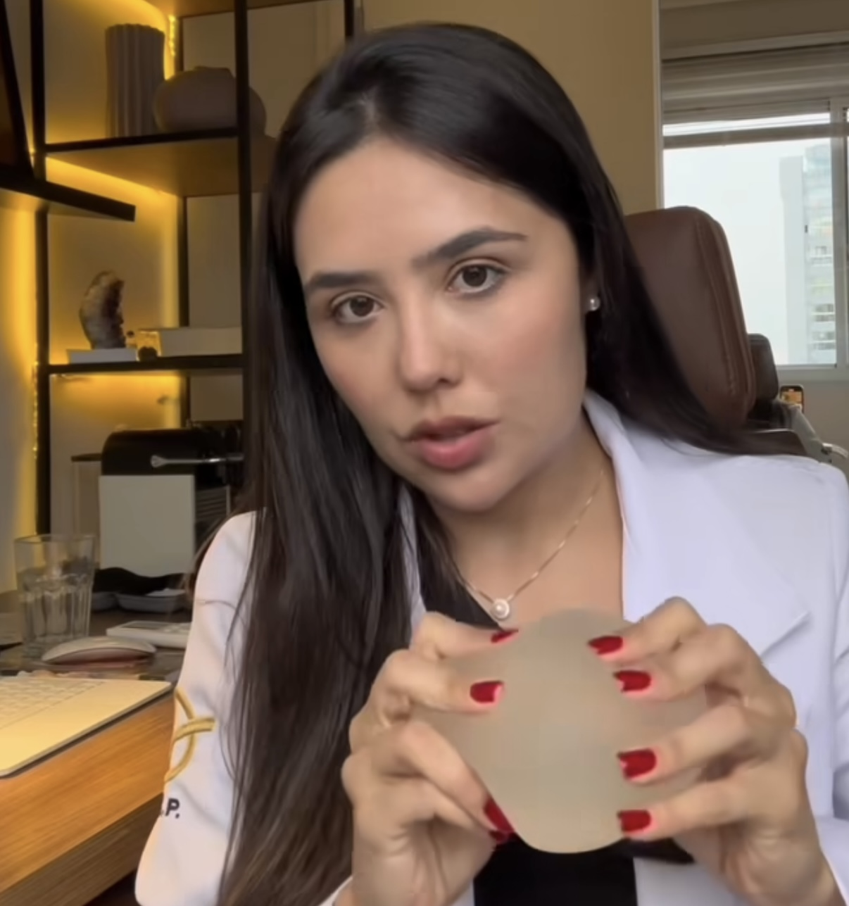

Dra. Pâmella Fernandes
Cirurgia Plástica
Residente em Cirurgia Plástica pelo Hospital Mater Dei
Agende sua Consulta

Mamas que Nunca Caem
Assimetria Mamária
Como Vejo a Plástica
Preparação para Cirurgia
Sobre Ritidoplastia
Sobre Mim
Olá! Sou a Dra. Pâmella Fernandes, residente em Cirurgia Plástica pelo Hospital Mater Dei. Com formação em Cirurgia Geral e experiência em procedimentos estéticos e reconstrutivos, dedico-me a proporcionar resultados naturais e harmoniosos para meus pacientes.
Formação
Residência em Cirurgia Plástica
Hospital Mater Dei
2023 - 2025 (finalizando em 2026)
Residência em Cirurgia Geral
Hospital IPSEMG
2020 - 2022
Graduação em Medicina
Pontifícia Universidade Católica de Minas Gerais
2013 - 2019
Procedimentos
Toxina Botulínica
Tratamento para suavizar linhas de expressão e rugas dinâmicas.
Preenchedores
Restauração de volume e contorno facial com ácido hialurônico.
Implante de Silicone
Aumento e reconstrução mamária com implantes de silicone.
Mastopexia
Elevação e reposicionamento das mamas para melhor contorno.
Abdominoplastia
Remoção de excesso de pele e gordura abdominal.
Blefaroplastia
Cirurgia das pálpebras para rejuvenescimento do olhar.
Lipoaspiração
Remoção de gordura localizada para melhorar o contorno corporal.
Rinoplastia
Cirurgia do nariz para harmonização facial e correção funcional.
Facelift
Cirurgia de rejuvenescimento facial para melhorar o contorno e firmeza da face.
Contato
contato@drapamella.com
Rua dos Aimorés, 3140 - Sala 608
Santo Agostinho, Belo Horizonte - MG
×